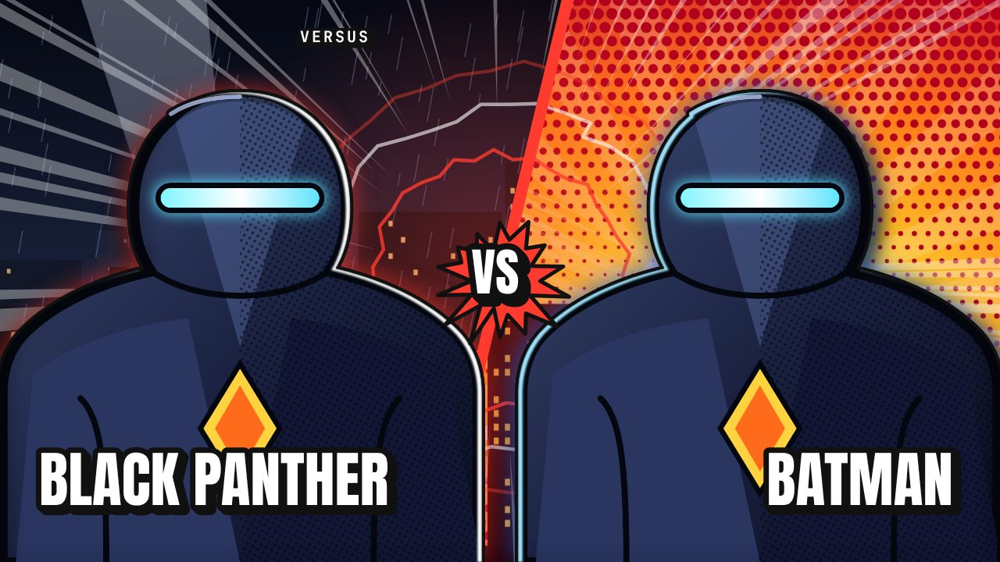

Production éditoriale
De l'intention à la série de publications.
- Assistant local : 27 types de contenus (versus, origine, classement, quiz, crossover…), chacun avec sa mise en scène
- Recomposition réelle par format : miniature, publication, story, carrousel, affiche
- Campagnes au calendrier, statuts de validation, production et export par lot
- Profils de direction artistique mesurés à partir de vos propres références